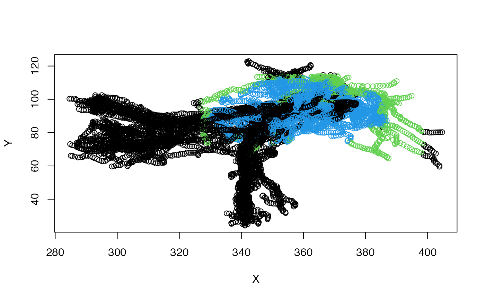

Find which points of an object are inside a surface
pointsinside(x, surf, ...) # S3 method for default pointsinside(x, surf, ..., rval = c("logical", "distance", "mesh3d", "consistent_logical"))
| x | an object with 3D points. |
|---|---|
| surf | The reference surface - either a |
| ... | additional arguments for methods, eventually passed to
|
| rval | what to return. |
A vector of logical values or distances (positive inside, negative
outside) equal to the number of points in x or the mesh3d object
returned by Rvcg::vcgClostKD.
Note that hxsurf surface objects will be converted to
mesh3d before being passed to Rvcg::vcgClostKD, so if you are
testing repeatedly against the same surface, it may make sense to
pre-convert.
pointsinside depends on the face normals for each face pointing out
of the object (see example). The face normals are defined by the order of
the three vertices making up a triangular face. You can flip the face
normal for a face by permuting the vertices (i.e. 1,2,3 -> 1,3,2). If you
find for a given surface that points are outside when you expect them to be
inside then the face normals are probably all the wrong way round. You can
invert them yourself or use the Morpho::invertFaces function to fix
this.
The rval argument determines the return value. These options should
be fairly clear, but the difference between logical and
consistent_logical needs some explanation. The logical method
now does a pre-test to remove any points that are not in the 3D bounding
box (cuboid) enclosing the surf object. This often results in a significant
speed-up by rejecting distant points and has the additional benefit of
rejecting distant points that sometimes are erroneously declared inside the
mesh (see below). Regrettably it is not yet possible to extend this
approach when distances are being returned, which means there will be a
discrepancy between the results of rval="logical" and looking for
points with distance >=0. If you want to ensure consistency between these
approaches, use rval="consistent_logical".
If you find that some points but not all points are not behaving as you
would expect, then it may be that some faces are not coherently oriented.
The Rvcg::vcgClean function can sometimes be used to
correct the orientation of the faces. Fixing more problematic cases may be
possible by generating a new surface using
alphashape3d::ashape3d (see examples).
# check if the vertices in these neurons are inside the mushroom body calyx # surface object inout=pointsinside(kcs20, surf=subset(MBL.surf, "MB_CA_L")) table(inout)#> inout #> FALSE TRUE #> 6530 1991# you can also check if points are inside a bounding box mbcalbb=boundingbox(subset(MBL.surf, "MB_CA_L")) inout2=pointsinside(kcs20, mbcalbb) # compare those two table(inout, inout2)#> inout2 #> inout FALSE TRUE #> FALSE 5691 839 #> TRUE 0 1991pts=xyzmatrix(kcs20) # nb that colour expressions maps combinations of two logicals onto 1:4 plot(pts[,1:2], col=1+inout+inout2*2)#> [1] "black" "red" "green3" "blue"# be a bit more lenient and include points less than 5 microns from surface MBCAL=subset(MBL.surf, "MB_CA_L") inout5=pointsinside(kcs20, surf=MBCAL, rval='distance') > -5 table(inout5)#> inout5 #> FALSE TRUE #> 5604 2917# show which points are in or out # Hmm seems like there are a few red points in the vertical lobe # that are well outside the calyx points3d(xyzmatrix(kcs20), col=ifelse(inout5, 'red', 'black')) plot3d(MBL.surf, alpha=.3) # Let's try to make an alphashape for the mesh to clean it up library(alphashape3d) MBCAL.as=ashape3d(xyzmatrix(MBCAL), alpha = 10) # Plotting the points, we can see that is much better behaved points3d(xyzmatrix(kcs20), col=ifelse(pointsinside(kcs20, MBCAL.as), 'red', 'black'))# NOT RUN { # Show the face normals for a surface if(require('Morpho')) { # convert to a mesh3d object used by rgl and Morpho packge MBCAL.mesh=as.mesh3d(subset(MBL.surf, "MB_CA_L")) fn=facenormals(MBCAL.mesh) wire3d(MBCAL.mesh) # show that the normals point out of the object plotNormals(fn, long=5, col='red') # invert the faces of the mesh and show that normals point in MBCAL.inv=invertFaces(MBCAL.mesh) plotNormals(facenormals(MBCAL.inv), long=5, col='cyan') } # }